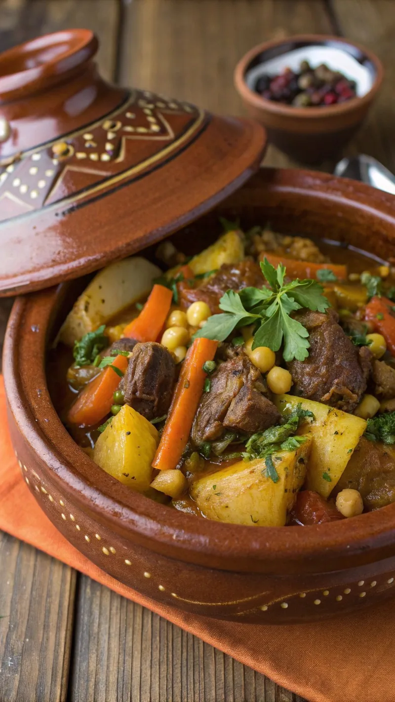
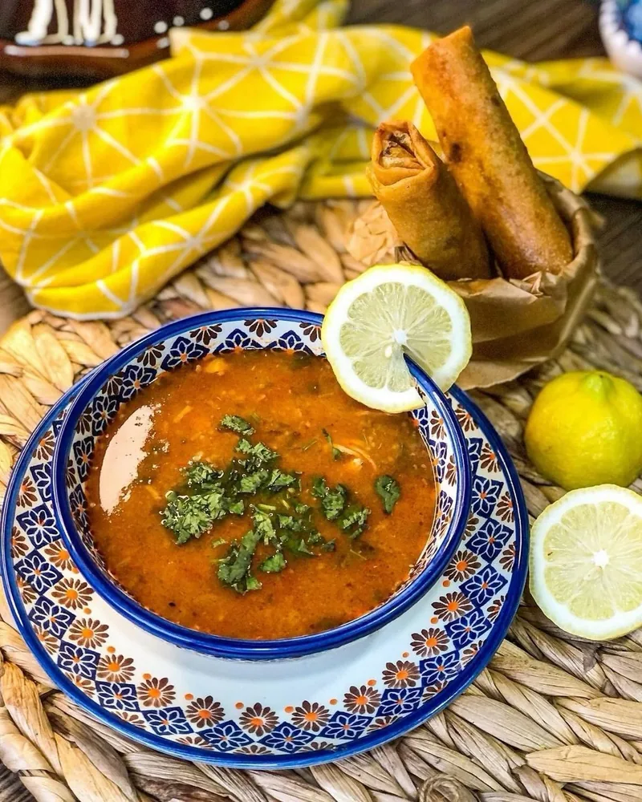
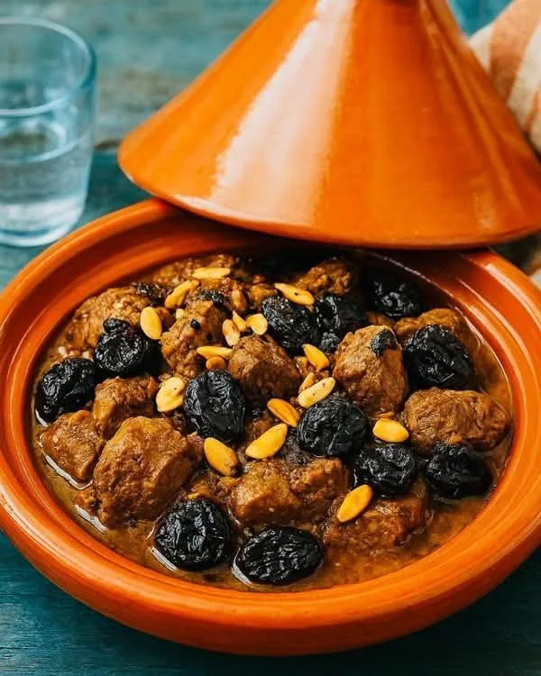
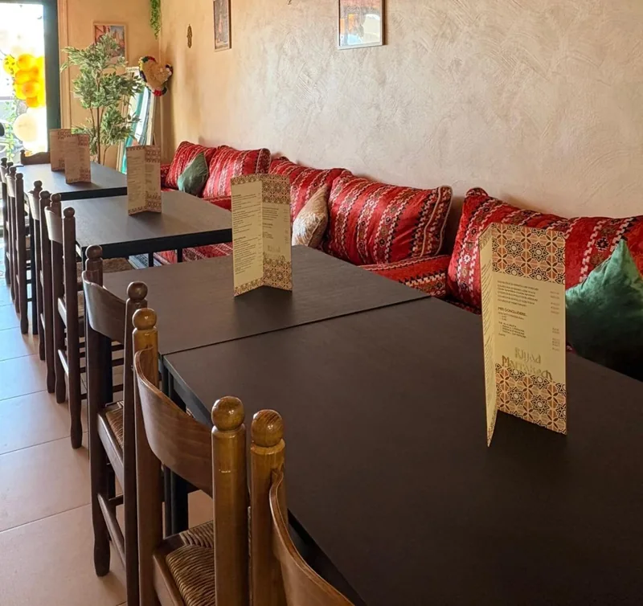

Riyad Marrakech · Cucina marocchina a Osimo
Il Marocco.
Alla tua tavola.
Il profumo delle spezie, il calore dell'ospitalità.
Benvenuti a Riyad Marrakech.
Via Ungheria 6, Osimo Da gustare qui o da portare via

01 / I nostri sapori
C'è un viaggio
in ogni piatto.
Ricette tradizionali, spezie aromatiche e il piacere di ritrovarsi a tavola.
Esplora il menùLeggi il menù completo con i prezzi
Il primo assaggio
Harira, bastila e sigari di pasta fillo.

L'anima del tajine
Carne, verdure e accostamenti agrodolci.

Voglia di kebab
Il gusto del kebab, anche da asporto.
Antipasti marocchini, tajine e couscous si preparano su prenotazione, con un giorno di anticipo.
Chiamaci per ordinarli
02 / Il nostro riad
Lontano quanto
un viaggio.
Vicino come casa.
Riyad Marrakech è un ristorante marocchino a Osimo, in Via Ungheria 6. Un divano accogliente, i colori del Marocco e il profumo delle spezie: un ambiente caldo, dove rallentare e condividere un buon piatto.
Portiamo a tavola tajine, antipasti tradizionali e proposte vegetariane. Per un pranzo, una cena o un kebab da portare con te, con il calore dell'ospitalità marocchina.
Imane e Khalid
03 / Uno sguardo da vicino
Colori, profumi,
momenti.
La nostra cucina. I nostri spazi.
Il tuo prossimo posto a tavola.
04 / Vieni a trovarci
Ci vediamo
a Osimo.
Via Ungheria 660027 Osimo (AN)Indicazioni stradali
Prenotazioni e asporto
327 773 4030Fai spazio al gusto
Orari di apertura
Ti aspettiamo a Riyad Marrakech
- Lunedì – Giovedì
- 11:00 – 22:30
- Venerdì
- 15:30 – 22:30
- Sabato
- 11:00 – 23:00
- Domenica
- 09:00 – 22:30
Antipasti marocchini, tajine e couscous: un giorno di anticipo.
Per festività e variazioni di orario, chiamaci.
Contanti · Visa · Mastercard · American Express · Maestro · Carta di debito · Contactless · Apple Pay
Riyad Marrakech su Google Maps
Via Ungheria 6 · 60027 Osimo (AN)
Il nostro riad, a Osimo
Trova Riyad Marrakech sulla mappa interattiva.
La mappa si apre tramite Google Maps.